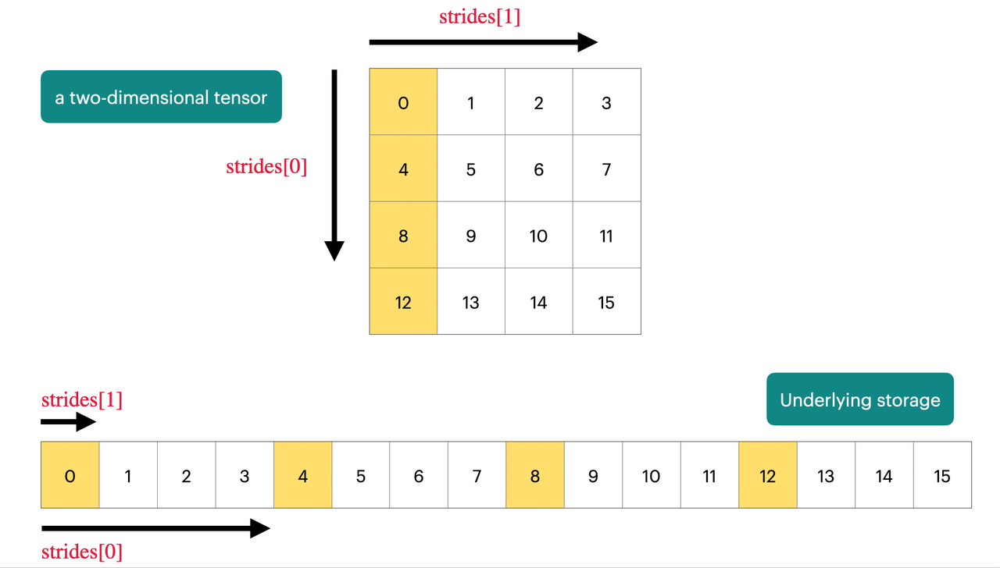

CS336 LLM
1. Overview and tokenizer
1.1. Overview
概述部分大概分为了五个部分
Basics
是指LLM中最主体的结构
- Tokenizer：BPE
- Transformer
- Activation function
- Positional encoding
- Normaliztion
- Place of Normalization
- MLP
- Attention
- Training
- Optimizer
- Learning rate
- Batch size
- Regularization
- Hyperparameters
Systems
- Kernel: manage kernels in GPU
- Cuda / Triton and so on to write a kernel
- Parallelism: manage lots of GPUs
- DP PP TP
- Inference: not just for chat, but useful for RL(rollout), evaluation
- Prefill and decode
- Kv cache
Scaling law
- Match data and parameters
- 给定有限的flops预算，如何一步步优化配比
Data
- Evaluation design
- Data curation
- Data processing
Alignment（post-train）
- SFT
- RL
1.2. Tokenizer
tokenizer的核心是把自然语言的一句话转换成整数数组，数组里的每个数都有一个范围，这个范围即是词表的大小
- 为什么需要数组：因为计算机只能处理数字
- 为什么是整数：因为文字是离散的，没有什么单词 or 汉字之间存在连续关系
多种tokenizer方案的对比
最后的选择结果是BPE，BPE的方案是先按照字节分，分外之后用语料去训练，将重复出现的字节对合并起来
2. Pytorch basic
2.1. tensors
Pytorch的核心是tensor，tensor基本都是float32精度的，但是由于大模型的计算量实在过大，由此衍生出了一些降低精度的方案
- float16
- bfloat16
- fp8
1 | |
实际的tensor的存储如下

基本上只要是获取某块连续的数据，就不会发生拷贝，如果获取的那块数据是不连续的，那么有些操作就会发生拷贝
通常在Pytorch中我们都会按照batch进行操作，因为一定程度上比起循环这样做的并行效率会更高
1 2 3 4 | |
Eniops
Eniops是Pytorch中非常有用的一个技巧（一个库），链接可以参考下面链接
Einops tutorial, part 1: basics - Einops
因为Pytorch中经常要对tensor的维度做很多变换，比如vit中经常要给图像做分块，emiops可以轻松地实现这个过程，并且可以大大增加可读性
1 2 3 4 5 6 7 8 9 | |
2.2. Flops
2.3 Computational Graph and AutoGrad
这部分不是336中的，是我在自学ML SYS中学到的内容，下面的代码来自于CMU的LLM System课程的作业
计算图（是一种有向无环图）的节点是数据，边是操作（加减乘除，tanh等等），一般来说，计算图的终点是Loss，然后我会根据Loss来计算拓扑，也就是找到所有影响这个Loss的数据并排序
1 2 3 4 5 | |
比如上述图，我们基于链式法则，需要在计算Loss对A的梯度之前，先计算Loss对于B和C的梯度，因此我们需要进行拓扑排序
python形式伪代码
1 2 3 4 5 6 7 8 9 10 11 12 13 14 15 16 17 18 19 20 21 22 23 24 | |
随后我们在反向传播，反向传播中有两个操作，计算梯度和传播梯度，比如计算A的时候需要B和C的梯度
1 2 3 4 5 6 7 8 9 10 11 12 13 14 15 16 17 18 19 20 21 | |
我们来看看chain rule内部的实现
1 2 3 4 5 6 7 8 9 10 11 12 | |
last_fn 这个变量是指一个操作，例如加减乘除，这边会调用 _backward 方法来计算梯度
1 2 3 4 5 6 7 8 9 10 11 12 13 14 15 16 17 18 19 20 21 22 23 | |
如果我们要在计算图中做算子融合，比如Attention操作，我们就要同时实现Attention操作的forward和backward操作，那么其进入计算图中，就可以进行AutoGrad
3. Architecture
3.1 Architecture development
在Architecture中首先提到了关于Transformer架构的部分迭代，包括
- Pre-Norm：相比于PostNorm会让Res Flow更加有效
- RMS-Norm：相比于LayerNorm会更加快速
- Activation function
- Rope：相比于其他位置编码支持更大的上下文训练
介绍一下这些架构的具体实现
3.2 HyperParameters
对于超参数的选择
- FFN size：对于RELU MLP层，一般hidden layer会是输入的4倍，这个hidden layer和input layer的参数比一般是由激活函数决定的
- 这种往往是一定程度上取决于经验法则，但是Google的T5等Model的hidden layer/input layer远远大于4，但是他们仍然有效

- head size：对于Model的heads，它的Num heads * Head dim 和 Model dim （就是每个token的长度）的比值往往是1
- aspect ratio：对于Model的参数和模型的层数的比值，也即每层的hidden states，一般在128左右
- vocabulary size：事实上来说为了应对更多的模态和语言，vocabulary size一直在增长，现在主流模型的量级在10w这个级别
- dropout and other regularization：在LLM上现在的趋势是用weight decay（对于模型参数过大提供一个惩罚项）替代dropout，根据实验表明，weight decay这个正则化方案其实和最初的初衷（防止过拟合）没有什么关系，而是与Learning rates调整技术一起，有效提高训练时的Loss下降
Training Stability
影响训练稳定性的主要因素往往在Softmax模块上，这个模块很容易出现梯度爆炸的问题因此也有很多解决它的方案，我们在Self-Attention和最后的Output的模块中都有Softmax模块
4. Moe
Moe已经是现在最先进模型的共同选择

现阶段Moe取得优势的只有在大型项目中，几乎一定是你需要做到张量并行的时候才需要，如果只是单卡训练，Moe往往不会有更好的效果
并且Moe有一个严重的问题是其Expert的路由选择是不可微分的，其并不是一个简单的矩阵乘法，对于Moe我们需要搞清楚
- Route function
- Expert size
- How to optimize the route function
Route Function
现阶段的大型系统都选择了Token top-k这个路由方案，top-k是指，其有一个网络针对每个token进行计算，计算出这个token最适合分配到k个experts，然后就会把token传给这k个experts进行计算，随后这k个experts的输出会被门控，然后进行一些加权计算合在一起，这是比较主流的做法

而事实上，虽然这些方案不主流，但是Hash分配，不考虑语义信息，也可以让Moe发挥作用，并且考虑到Route是一个离散决策，也可以考虑用RL进行优化，但是这个方案Cost很大，也不主流
为什么说RL擅长离散决策，实际上RL将离散决策优化成了一个可微分方案，比如Policy base的把离散决策改为输出概率分布，又或者Value-base将离散决策改为了Value的变化
这个Token top-k的方案和Attention计算很像，将输入的token和experts的表征向量计算相似度，获得top-k
5. GPU
5.1 GPU Basic
在视频开头提供了很多有用资源

在21世纪初开始，计算机芯片包括CPUorGPU的单线程性能开始达到饱和，人们开始从absolute speed scaling转向parallel scaling

CPU和GPU的结构对比，CPU中最重要的是Control Unit来应对大量的分支逻辑，而GPU中最重要的是计算单元，来处理海量的计算逻辑。CPU是为了尽快完成某个任务，而GPU不关心某个的任务的速度，而是关注一个批次任务的完成时间
Computer in GPU
GPU内部结构最重要的是SM（Streaming Multi-processor）而SM中有包含多个SP（Streaming processor），它们的区别在于，SM存在控制单元，类似CPU，可以进行一些逻辑上的并行，其可以单独掌控一个批次任务；而SP不存在控制单元，它们只能处理一样的逻辑，做数据并行
- SM是控制的最小单元
- SP是计算的最小单元

Memory in GPU
SM能离Memory越近，其计算速度会越快

- L1 Cache 和 Shared Memory 就在SM上
- L2 Cache 在SM边上
- Global Memory相当于是在外部，Dram，常说的H100的80GB内存，就是指Global Memory
Execution Model of GPU
从粗粒度到细粒度，GPU的执行模型有三个部分，Blocks, Warps, Threads
- Blocks: 一个Block会被分配给一个SM进行处理
- Warp：一批被打包好的Threads，最终丢给SP执行
- Threads: Threads是一批指令，最终丢给SP中的计算单元执行

Memory Model of GPU
我们有很多不同的Memory可供写入，但是跨Block的Data需要写入Global Memory
如果我们的编写的程序中，Thread只需要访问shared memory，那么其会变得非常快，如果其不得不访问大量的分散数据，就会变得很慢

5.2 Making ML workloads fast on GPU
Control divergence
Thread内部必须执行一样的指令，因此条件语句会迫使其无法并行

Low precision computation
在GPU中使用低精度，会大大地加速整个过程，不论是在执行运算，还是在内存通信角度都是如此
Operator fusion

当我们把内容从Memory读到计算单元地时候，最好一次性把所有操作干完，再写回去，而不是一遍一遍地读取更新
recomputation
激活值从计算，在Large scale playbook中也提过，计算量换内存
Memory coalescing
这个概念的核心其实是局部性原理，GPU在访问全局内存的时候，不会一次性只获取一个字节，而是会获取一批次数据，这和我们在CPU的memory设计中做的很想

相对应的，当我们在一个warp中进行访存时候，其中的访存结果都在一个Burst section中，往往一次访问内存就可以全部解决。值得注意的是一个warp的内存访问是统一处理的
tiling

我们最好地遍历矩阵地方案是按列遍历，每个thread处理一行，但是在矩阵乘法中，不可避免地我们对某个矩阵要按行遍历，导致M0,0被两个线程处理，导致了两倍地读取行为
更好地方案是，根据我们地共享内存地大小，把矩阵分块，读取，局部地计算完，在返回

但是实际上地情况我们的不仅要考虑shared memory地大小，还要考虑我们地矩阵无法被很好的均分，比如257x257的矩阵，就比较难划分地均匀
GPU中地处理器一般最适合处理128倍数地数据
5.3 Flash Attention
计算层面地二次开销，而非内存层面的二次开销
FlashAttention 1 只是对KQV矩阵做了简单的tiling，分块到SRAM中，进行统一的计算，减少内存读写

Flash attention Softmax
标准的Softmax的算法无法应用tiling，因为其需要全局操作，Flash Attention中应用online softmax，进行了一些改动，使其可以做到先局部计算，再得到最终结果

6. Kernels & Triton
为什么我们需要定义Block，是因为block内部有高效的SRAM，我们希望能够定义一个内存高效的计算模型
理想情况下，我们希望我们的Block的数量能够被SM的数量整除，这样子计算的效率会更高
6.1 Benchmarking and Profiling
衡量一个GPU执行代码的时间，要注意两点，一个是去除编译和代码转移的时间，因此先执行一次做一个warmup，另一个保持CPU和GPU同步，这个是torch里面有实现的
Pytorch提供的profiler库，是一个很好的性能分析工具，可以把你的函数的具体行为和开销给展现出来
示例代码如下
1 2 3 4 5 6 7 8 9 10 11 12 13 14 15 16 17 18 19 20 21 22 23 24 25 26 27 28 29 30 31 32 33 34 35 36 37 38 39 40 41 42 43 44 45 46 47 | |
上述内容测试了一个torch.cdist函数，该函数用于计算两个向量之间的欧式距离
profile的输出如下
| Name | Self CPU % | Self CPU | CPU total % | CPU total | CPU time avg | Self CUDA | Self CUDA % | CUDA total | CUDA time avg | # of Calls |
|---|---|---|---|---|---|---|---|---|---|---|
| aten::cdist | 1.07% | 32.720us | 17.57% | 537.666us | 537.666us | 0.000us | 0.00% | 41.313us | 41.313us | 1 |
| aten::_euclidean_dist | 1.66% | 50.863us | 15.26% | 467.031us | 467.031us | 0.000us | 0.00% | 41.313us | 41.313us | 1 |
| aten::matmul | 0.17% | 5.202us | 3.34% | 102.330us | 102.330us | 0.000us | 0.00% | 19.680us | 19.680us | 1 |
| aten::mm | 2.43% | 74.400us | 3.17% | 97.128us | 97.128us | 19.680us | 41.64% | 19.680us | 19.680us | 1 |
| ampere_sgemm_32x128_tn | 0.00% | 0.000us | 0.00% | 0.000us | 0.000us | 19.680us | 41.64% | 19.680us | 19.680us | 1 |
| aten::randn | 1.05% | 32.037us | 82.03% | 2.510ms | 1.255ms | 0.000us | 0.00% | 5.952us | 2.976us | 2 |
| aten::normal_ | 1.45% | 44.262us | 3.32% | 101.587us | 50.793us | 5.952us | 12.59% | 5.952us | 2.976us | 2 |
| void at::native::(anonymous namespace)::distribution_elementwise_grid_stride_... | 0.00% | 0.000us | 0.00% | 0.000us | 0.000us | 5.952us | 12.59% | 5.952us | 2.976us | 2 |
| aten::cat | 1.12% | 34.355us | 1.63% | 49.846us | 24.923us | 5.089us | 10.77% | 5.089us | 2.544us | 2 |
| void at::native::(anonymous namespace)::CatArrayBatchedCopy_aligned16_contig<... | 0.00% | 0.000us | 0.00% | 0.000us | 0.000us | 5.089us | 10.77% | 5.089us | 2.544us | 2 |
Summary
- Self CPU time total: 3.060ms
- Self CUDA time total: 47.265us
上述内容更适合做一些静态的内容分析，而对于动态的，复杂的项目，单纯的profile其实并不能直接解决掉监控的问题
我们可以通过nvtx打印查看点，然后再更强大的profiler里进行查看
6.2 Kernel
以一个手写的torch的GELU为例子
1 2 | |
上述是通过一个数学的trick来实现一个近似的gelu的，而官方的gelu
1 2 | |
对比发现双方虽然数值结果相同，但是耗时差距巨大
通过profile我们可以发现，两个操作，manual的版本启动了多个cuda kernel，包括加法，乘法，tanh，但是gelu版本只启动了一个kernel，gelu kernel完成了所有操作
因此我们尝试手写cuda内核
1 2 3 4 5 6 7 8 9 10 11 12 13 14 15 16 17 18 19 20 21 22 23 24 25 26 27 28 29 30 31 32 33 34 35 36 37 38 39 40 41 42 43 44 45 46 47 | |
对于一系列的简单cuda kernel，其往往会招致多次的内存读写，将其融合成一个大的复杂算子，效率就会高很多，这也就是所谓的算子融合的概念
cuda kernel的代码一般包含两部分的内容，一部分是实际的cuda kernel计算的代码，另一部分是对这个kernel的包装C++ wrapper，配置block size然后定义block内数据的数量
6.3 Triton Kernel
Triton是OpenAI开发的一种方式，编写cuda非常的复杂并且难以调试，能否用一个更加high level的基于python的形式编写内核，这既是Triton为我们带来的
其使得我们不用关心线程这个层次，而是更关心SM这个层次，线程块的层面
面对Triton代码，我们考虑的不是单个线程，而是线程块，以至于Triton代码中都是vector的操作，因为我总是再操作一块数据
6.4 torch compile
除了手动编写cuda内核以及用Triton来编写内核以外，有一种很简便的方案来做算子融合，那就是torch.compile
之前的一系列手写内核的方案，无非就是把一系列的内核操作组合起来形成一个新的内容，那么我们自然会想有没有更自动化的方案去做这些东西
1 | |
torch.compile会做很多操作，不只是算子融合，也有一些其他的优化tricks，比如优化矩阵乘法
6.5 More about GPU coding
这个链接 包含了很多的资源，可以帮我们入门GPU coding，以及一些更加深入的学习
我也将笔记记录于此
Cuda的特点包括
- CPP语法
- SIMT（Single Instruction Multiple Threads）一个指令会被多个线程同时执行
- 需要和CPU协作，CPU整理结果，处理逻辑
- 自动调度：根据设定的执行参数，自动分配线程调度

我们在CPU编写的循环逻辑，在GPU上都应该转换成SIMT的逻辑
在CUDA中，我们需要定义，Grid->Block->Threads，相对于之前的SM->Warp->Thread，每一个Thread的ID我们可以这样子获得

这也是我们在每个Kernel函数最开始，计算自己的Thread的Id的方案，因为每个Kernel都是分配给一个SM/Grid执行的，我们对这个SM的定义的Block数量和Block里的size，随后就能分配Block的可执行的线程了
ThreadId定义了当前Thread和其他的区别，也就是这样子实现了编写一个程序在多个Thread执行，SIMT
1 | |
Grid和SM理论上是指同一个东西，但是区别在于Grid是逻辑上的存在，其理论上可以容量无数的线程；SM是物理上的存在，Grid相当于SM的虚拟化，但是当这个线程数量超过了当前的SM的上限时，其会做一个虚拟化的工作，会分配其他的SM来帮我处理当前的Kernel的任务，因此一个Kernel也可以占满GPU的SM
Block只能存在于一个SM中，Grid中包含多个Block，实际操作中会把该Block分发到某个具体的SM上执行，SM会解包这个Block，将内部的线程取成warp执行，因为warp往往是32个线程一个，因此Block size最好是32的倍数
以下是一个简单的cuda程序，来计算向量加法
1 2 3 4 5 6 7 8 9 10 11 12 13 14 15 16 17 18 19 20 21 22 23 24 25 26 27 28 29 30 31 32 33 34 35 36 37 38 39 40 41 42 43 44 45 46 47 48 49 50 51 52 53 54 55 56 57 58 59 60 61 62 63 64 65 66 67 68 69 70 71 72 73 74 75 76 77 78 79 | |
考虑Coalesced Memory Access，多个线程访问多个连续的内存，GPU硬件可以将其优化为少几次内存事务
1 2 3 4 5 6 7 8 9 10 11 12 13 14 | |